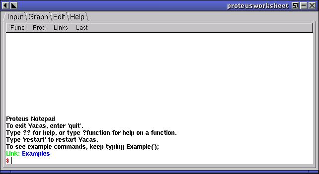

| Herramientas en GNU/Linux para estudiantes universitarios: La herramienta de cálculo científico YACAS | ||
|---|---|---|
| Anterior | Siguiente | |
Podemos arrancar YACAS en modo gráfico o en la consola.
Si existe una entrada en los menús de nuestro entorno gráfico bastará con arrancarlo como cualquier otra aplicación.
En caso de no existir podemos abrir una consola y teclear en ella:
jose@debian:~/$ proteusworksheet
Después de pulsar return arrancaría la aplicación:
